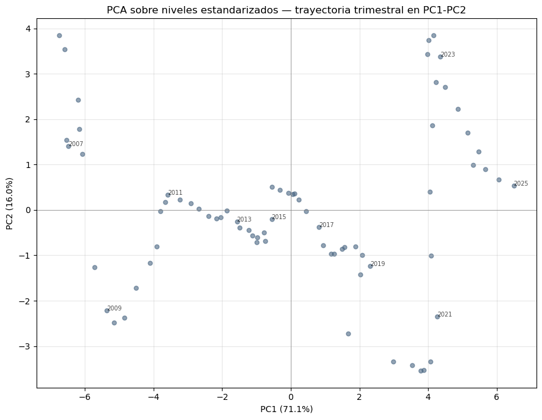
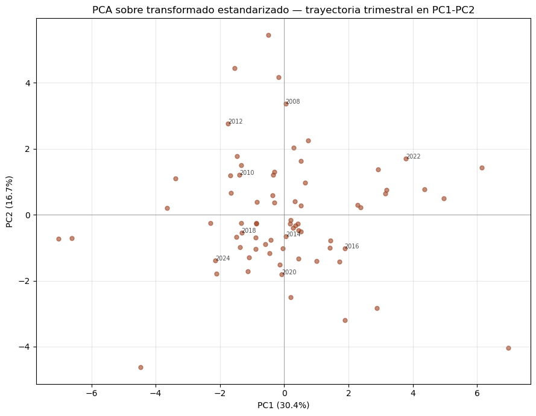

Tesis: Medición del ciclo financiero en Perú mediante técnicas de reducción dimensional y machine learning
Responsabilidad única de este notebook: ajustar PCA sobre las dos versiones estandarizadas del dataset (niveles vs. transformado) y comparar resultados. No modifica ningún archivo de data/processed/ – solo lee.
Salidas: - reports/figures/05_pca_*.png – scree plots, biplots, cargas factoriales - data/results/05_pca_scores_niveles.csv, 05_pca_scores_transformado.csv - data/results/05_pca_cargas_niveles.csv, 05_pca_cargas_transformado.csv - data/results/05_pca_comparacion.csv – tabla resumen para el marco de validación (sección 6 del marco conceptual: interpretabilidad, capacidad descriptiva).
1. Librerías y carga de datos (solo lectura)
import osos.chdir('..') if os.path.basename(os.getcwd()) =='notebooks'elseNoneimport pandas as pdimport numpy as npimport matplotlib.pyplot as pltfrom sklearn.decomposition import PCAdf_niveles = pd.read_csv('data/processed/dataset_niveles_estandarizado_trimestral.csv', index_col=0, parse_dates=True)df_transf = pd.read_csv('data/processed/dataset_estandarizado_trimestral.csv', index_col=0, parse_dates=True)print(f'Niveles estandarizados: {df_niveles.shape[0]} trimestres x {df_niveles.shape[1]} variables')print(f'Transformado estandarizado: {df_transf.shape[0]} trimestres x {df_transf.shape[1]} variables')
Niveles estandarizados: 73 trimestres x 20 variables
Transformado estandarizado: 72 trimestres x 18 variables
2. Función auxiliar
Se define una función que ajusta PCA y produce las tres salidas estándar (varianza explicada, cargas factoriales, scores), para aplicarla de forma idéntica a ambos datasets y evitar diferencias accidentales de código entre un análisis y otro.
def ajustar_pca(df, etiqueta, n_componentes=None):""" Ajusta PCA sobre un dataframe ya estandarizado. Devuelve: modelo ajustado, df de scores, df de cargas factoriales. """ n_max =min(df.shape[0], df.shape[1]) n_componentes = n_componentes or n_max pca = PCA(n_components=n_componentes, random_state=42) scores = pca.fit_transform(df) nombres_pc = [f'PC{i+1}'for i inrange(n_componentes)] df_scores = pd.DataFrame(scores, index=df.index, columns=nombres_pc)# Cargas factoriales = correlacion entre cada variable original y cada componente cargas = pca.components_.T * np.sqrt(pca.explained_variance_) df_cargas = pd.DataFrame(cargas, index=df.columns, columns=nombres_pc)print(f'--- PCA sobre {etiqueta} ---')print(f'Componentes retenidos: {n_componentes}')print(f'Varianza explicada (primeros 5): {np.round(pca.explained_variance_ratio_[:5] *100, 1)}%')print(f'Varianza acumulada (primeros 5): {np.round(np.cumsum(pca.explained_variance_ratio_[:5]) *100, 1)}%')return pca, df_scores, df_cargas
3. PCA sobre niveles estandarizados (SIN transformar)
3.2 Cargas factoriales — primeros 3 componentes (niveles)
Las variables con mayor carga (en valor absoluto) en cada componente son las que ese componente resume. Sirve para la lectura económica de cada PC.
for pc in ['PC1', 'PC2', 'PC3']:print(f'--- {pc} (niveles) — variables con mayor carga ---')print(cargas_niveles[pc].abs().sort_values(ascending=False).head(6).round(3))print()
--- PC1 (niveles) — variables con mayor carga ---
Crédito hipotecario 1.001
Liquidez M3 0.997
Crédito SF sector privado 0.997
Liquidez M2 0.995
Crédito empresarial 0.994
Crédito consumo 0.984
Name: PC1, dtype: float64
--- PC2 (niveles) — variables con mayor carga ---
Tasa interbancaria 0.983
Tasa referencia BCRP 0.980
Tasa pasiva TIPMN 0.921
Tasa activa TAMN 0.400
embi_peru 0.382
IPC Lima 0.222
Name: PC2, dtype: float64
--- PC3 (niveles) — variables con mayor carga ---
embi_peru 0.768
Índice BVL 0.531
Tipo de cambio 0.439
Tasa activa TAMN 0.167
Reservas internacionales 0.138
Crédito empresarial 0.120
Name: PC3, dtype: float64
3.3 Biplot (PC1 vs PC2) — niveles
fig, ax = plt.subplots(figsize=(9, 7))ax.scatter(scores_niveles['PC1'], scores_niveles['PC2'], alpha=0.6, s=25, color='#486581')for i, fecha inenumerate(scores_niveles.index):if i %8==0: # etiquetar cada 2 años (trimestral) para no saturar el grafico ax.annotate(fecha.strftime('%Y'), (scores_niveles['PC1'].iloc[i], scores_niveles['PC2'].iloc[i]), fontsize=7, alpha=0.7)ax.axhline(0, color='gray', linewidth=0.5)ax.axvline(0, color='gray', linewidth=0.5)ax.set_xlabel(f'PC1 ({pca_niveles.explained_variance_ratio_[0]*100:.1f}%)')ax.set_ylabel(f'PC2 ({pca_niveles.explained_variance_ratio_[1]*100:.1f}%)')ax.set_title('PCA sobre niveles estandarizados — trayectoria trimestral en PC1-PC2')ax.grid(True, alpha=0.3)plt.tight_layout()plt.savefig('reports/figures/05_pca_biplot_niveles.png', dpi=150, bbox_inches='tight')plt.show()

3.4 Diagnóstico de tendencia común (niveles)
Verificación explícita del riesgo señalado en la discusión metodológica: si PC1 correlaciona fuertemente con el simple paso del tiempo, es señal de que el componente está capturando tendencia común, no estructura económica.
indice_temporal = np.arange(len(scores_niveles))corr_pc1_tiempo = np.corrcoef(scores_niveles['PC1'], indice_temporal)[0, 1]print(f'Correlación entre PC1 y el paso del tiempo (niveles): {corr_pc1_tiempo:.3f}')ifabs(corr_pc1_tiempo) >0.7:print('⚠ Correlación alta: PC1 podría estar dominado por tendencia común, no por')print(' estructura de co-movimiento economicamente interesante. Interpretar con cautela.')else:print('Correlación moderada/baja: PC1 no parece dominado por una tendencia temporal simple.')
Correlación entre PC1 y el paso del tiempo (niveles): 0.994
⚠ Correlación alta: PC1 podría estar dominado por tendencia común, no por
estructura de co-movimiento economicamente interesante. Interpretar con cautela.
4. PCA sobre datos transformados y estandarizados (log-diff / diff)
4.2 Cargas factoriales — primeros 3 componentes (transformado)
for pc in ['PC1', 'PC2', 'PC3']:print(f'--- {pc} (transformado) — variables con mayor carga ---')print(cargas_transf[pc].abs().sort_values(ascending=False).head(6).round(3))print()
fig, ax = plt.subplots(figsize=(9, 7))ax.scatter(scores_transf['PC1'], scores_transf['PC2'], alpha=0.6, s=25, color='#9c4221')for i, fecha inenumerate(scores_transf.index):if i %8==0: ax.annotate(fecha.strftime('%Y'), (scores_transf['PC1'].iloc[i], scores_transf['PC2'].iloc[i]), fontsize=7, alpha=0.7)ax.axhline(0, color='gray', linewidth=0.5)ax.axvline(0, color='gray', linewidth=0.5)ax.set_xlabel(f'PC1 ({pca_transf.explained_variance_ratio_[0]*100:.1f}%)')ax.set_ylabel(f'PC2 ({pca_transf.explained_variance_ratio_[1]*100:.1f}%)')ax.set_title('PCA sobre transformado estandarizado — trayectoria trimestral en PC1-PC2')ax.grid(True, alpha=0.3)plt.tight_layout()plt.savefig('reports/figures/05_pca_biplot_transformado.png', dpi=150, bbox_inches='tight')plt.show()

4.4 Diagnóstico de tendencia común (transformado)
indice_temporal = np.arange(len(scores_transf))corr_pc1_tiempo = np.corrcoef(scores_transf['PC1'], indice_temporal)[0, 1]print(f'Correlación entre PC1 y el paso del tiempo (transformado): {corr_pc1_tiempo:.3f}')ifabs(corr_pc1_tiempo) >0.7:print('⚠ Correlación alta: revisar.')else:print('Correlación moderada/baja: PC1 no parece dominado por tendencia temporal simple.')
Correlación entre PC1 y el paso del tiempo (transformado): 0.089
Correlación moderada/baja: PC1 no parece dominado por tendencia temporal simple.
5. Comparación directa: niveles vs. transformado
Tabla resumen para el capítulo de validación (sección 6 del marco conceptual): capacidad descriptiva (varianza explicada) e indicio de contaminación por tendencia (correlación PC1-tiempo).
for pc in ['PC1', 'PC2', 'PC3']: corr = np.corrcoef(scores_niveles[pc], np.arange(len(scores_niveles)))[0, 1]print(f'Correlación {pc} vs. tiempo (niveles): {corr:.3f}')
Correlación PC1 vs. tiempo (niveles): 0.994
Correlación PC2 vs. tiempo (niveles): 0.068
Correlación PC3 vs. tiempo (niveles): 0.036